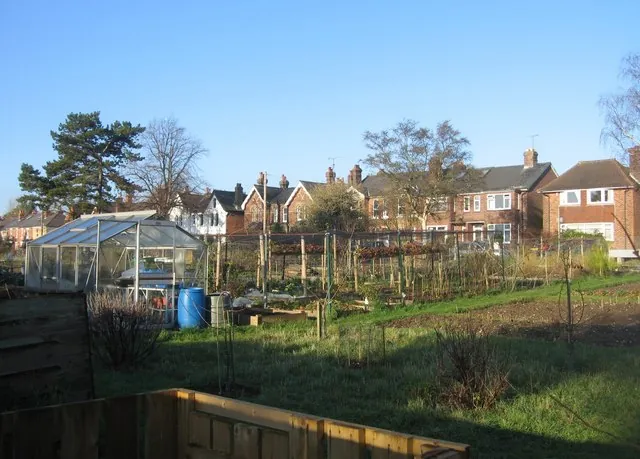

Las señales de cosecha de cada cultivo, cuáles tienen que curarse antes de guardarse, los tres tipos de despensa y lo que nunca debería ver el refrigerador.

Foto: Sebastian Ballard · CC BY-SA 2.0, vía Wikimedia Commons.
Qué necesitas
Manos suaves. Lo que se golpea se pudre primero, y la pudrición se extiende en el almacén.
Un lugar cálido y ventilado para curar cebollas, ajos y papas
Algún rincón fresco y oscuro, aunque sea solo una caja en el sótano
Para que una cosecha dure, cosecha en la señal justa, cura los cultivos que lo necesitan y guarda cada uno en las condiciones que pide. Las señales son concretas y vale la pena aprenderlas, porque una hortaliza cosechada en su momento se conserva meses, y la misma cosechada a destiempo se conserva días.
¿Cómo sé que algo ya está listo para cosechar?
Cada cultivo tiene su señal, y las guías de extensión universitaria son útilmente directas al respecto:
Tomates - cuando el color es rosa o rojo parejo, sin manchas.
Ejotes - de dos a tres semanas después de la floración, mientras las semillas de adentro todavía están inmaduras; un ejote con bultos ya se pasó.
Zanahorias - cuando los hombros miden unos 2.5 cmuna pulgada de ancho; después de eso aguantan en la tierra.
Cebollas - cuando los cuellos están firmes y las capas de afuera secas, por lo general después de que se doblan las hojas.
Papas - cuando la mata se seca; la piel se endurece en la tierra durante esas últimas semanas.
Calabaza de invierno - cuando la cáscara está tan dura que resiste la uña del pulgar, y siempre antes de que una helada alcance el fruto.
Dos costumbres importan tanto como el momento. Trata todo como si fueran huevos, porque cuanto menos se golpea, se raya o se cae una hortaliza, más dura. Y guarda solo lo que está sano. Una cebolla podrida pronto les pasa la pudrición a las demás.
¿Qué cultivos tienen que curarse antes de guardarse?
Unos cuantos cultivos necesitan un descanso a propósito entre el huerto y el estante, y saltárselo es la razón más común por la que los “cultivos para guardar” no se guardan. El corpus incluye la versión de las aliáceas como regla calificada, con su mecanismo y todo.
Si no lo sigues, aun así crece, solo que peor. El planificador lo sugiere.
Cómo funciona: Al cosecharlo, el cuello y las capas exteriores del bulbo siguen siendo tejido vivo húmedo y el cuello es un canal abierto hacia el bulbo, así que curarlo con aire cálido en movimiento seca y cierra el cuello y convierte las capas exteriores en una piel protectora como papel, eliminando el tejido húmedo que colonizan las pudriciones de almacenamiento y sellando el cuello por el que entran; un bulbo sin curar entra al almacenamiento con el cuello húmedo y abierto y las capas blandas, y se descompone.
Evidencia: cotejada con 2 fuentes en la literatura basada en investigación.
Allow bulbs to dry until the neck is dry and the outer skin is papery, approximately two to three weeks
Solución
Después de sacarlos, extiende los bulbos en una sola capa o cuélgalos en manojos en un lugar cálido, a la sombra y bien ventilado, lejos del sol directo y la lluvia, y déjalos hasta que el cuello esté seco y apretado y la piel exterior parezca papel. Eso toma más o menos de dos a cuatro semanas para las cebollas (un calor de 75-90 °F lo acelera) y de dos a tres semanas para el ajo. Solo entonces recórtalos, y guarda los bulbos curados en bolsas de malla o cajas poco profundas en un lugar fresco, seco y bien ventilado. Manéjalos con cuidado todo el tiempo, porque los golpes también abren la puerta a la pudrición en el almacenamiento.
Las papas tienen su propia versión de la misma pausa. Dos semanas en algún lugar a unos 10-16°C50-60°F dejan que la piel se engrose y que las raspaduras pequeñas cicatricen antes de guardarlas. La calabaza de invierno en general no necesita curado, solo estar bien dura al cosecharla, y a los tipos bellota (acorn) el curado les sienta mal, así que esos no los cures.
¿Dónde debe guardarse cada cultivo una vez cosechado?
Guardar se reduce a dos perillas, la temperatura y la humedad, y los cultivos se reparten en tres combinaciones:
Fresco y seco - alrededor de 10-16°C50-60°F, ~60% de humedad: calabaza de invierno y calabaza de Castilla. Sirve el clóset de un cuarto que no se usa o un rincón fresco del sótano.
Frío y seco - 0-4°C32-40°F, ~65%: cebollas, una vez curadas.
Frío y húmedo - 0-4°C32-40°F, ~95%: las raíces (zanahorias, remolachas, chirivías) y el repollo. El truco casero para lo “húmedo” es una bolsa de plástico perforada en el refrigerador.
El ajo curado no necesita ninguna de las tres. Se guarda a temperatura ambiente, el de cuello duro de tres a cuatro meses y el de cuello blando de seis a ocho.
Bien acomodados, los números son generosos: las zanahorias pueden durar ocho meses, las papas seis, la calabaza de invierno de dos a seis y las cebollas curadas cuatro. El frío también puede mejorar un cultivo. La chirivía se endulza después de un par de semanas cerca de 0°C32°F, y por eso los viejos hortelanos las dejaban para después de las heladas.
¿Qué nunca debería ir al refrigerador?
El refrigerador es un clima concreto, frío y bastante seco, y solo les va bien a los cultivos que quieren justo eso. Los tomates nunca entran. El frío les arruina la textura y el sabor. Uno maduro dura cinco días en un rincón fresco de la cocina. Las papas piden oscuridad tanto como frío, por una razón que el corpus califica.
Los tubérculos de papa que reciben luz mientras crecen (donde la tierra se asienta o se lava y los tubérculos poco profundos quedan descubiertos) se ponen verdes y se vuelven amargos y tóxicos, así que el cultivo debe mantenerse cubierto de tierra.
Esta regla trata de comer sin riesgo, no de cómo crece la planta. El planificador lo sugiere.
Cómo funciona: El tejido del tubérculo expuesto a la luz produce clorofila y, en ese mismo tejido, sintetiza los glicoalcaloides tóxicos solanina y chaconina, así que la tierra amontonada sobre los tubérculos en desarrollo les impide recibir luz y evita que se formen tanto el color verde como la toxina.
Evidencia: cotejada con 2 fuentes en la literatura basada en investigación.
Green skin occurs when potato tubers experience exposure to light
Solución
Aporca el cultivo. Cuando los tallos midan más o menos 8-12 pulgadas (20-30 cm), arrima tierra suelta alrededor de la base de las plantas para cubrir la mayor parte del tallo y enterrar cualquier tubérculo poco profundo, y repítelo dos o tres veces durante la temporada para que los tubérculos sigan cubiertos. Los tubérculos verdes son amargos y no deben comerse; el verde indica que la toxina está presente y pelarlos no la elimina de forma confiable, así que la defensa es evitar que la luz llegue a los tubérculos desde el principio, en la tierra y otra vez en un almacenamiento oscuro.
El mismo mecanismo que pone verde un tubérculo en el huerto lo pone verde en un frutero junto a la ventana. Guarda las papas a oscuras, en lugar fresco y sin lavar, y quítales cualquier parte verde antes de cocinarlas.
¿Qué cosechas premian la paciencia?
Un par de cosechas se miden en años, y para esas la habilidad de cosechar es contenerse.
No coseches nada de espárrago el primer año después de plantar las coronas. Cuando empiece la cosecha (la segunda o la tercera primavera, según la fuente que sigas), que sea corta. Cosecha unas dos semanas el primer año de cosecha, no más de un mes, y luego deja crecer todos los turiones posteriores. A partir del cuarto año, la cosecha puede durar de ocho a diez semanas. Cuando termine la cosecha, deja que los turiones se conviertan en helechos y déjalos en pie, porque los helechos son lo que alimenta la corona para el año siguiente.
Si no lo sigues, aun así crece, solo que peor. El planificador lo sugiere.
Cómo funciona: Cada turión sale de la energía almacenada en la corona, y los helechos son lo que vuelve a llenar esa reserva. La fotosíntesis del helecho se guarda bajo tierra para producir los turiones del año siguiente. Una plantación joven todavía está ampliando su sistema de almacenamiento en las raíces, así que cortar sus turiones quita los brotes que se habrían convertido en helechos, y quitar demasiados turiones debilita las plantas. La moderación en los años de establecimiento es lo que forma una corona lo bastante fuerte para dar una cosecha completa durante décadas.
Evidencia: cotejada con 2 fuentes en la literatura basada en investigación.
During the fourth year and thereafter, the spears may be harvested from their first appearance in the spring through May or June (as long as 8 to 10 weeks).
Solución
Primer año después de plantar las coronas: no coseches nada y deja que todo se convierta en helecho. En el primer año en que sí coseches, cosecha solo durante unas dos semanas, un mes como máximo, y luego para. A partir del cuarto año, cosecha desde los primeros turiones hasta mayo o junio, unas ocho a diez semanas. Cada año, cuando termine la cosecha, deja que los turiones restantes se conviertan en helechos y cuídalos; son la cosecha del año siguiente que se está guardando.
El ruibarbo empieza igual, con una cosecha ligera mientras una corona joven se establece, y tiene una regla de cosecha propia que conviene conocer bien.
Las láminas de las hojas del ruibarbo son venenosas y nunca deben comerse. Solo los tallos de las hojas (los pecíolos) son comestibles. Cosecha los tallos y córtales las hojas.
Esta regla trata de comer sin riesgo, no de cómo crece la planta. El planificador lo sugiere.
Cómo funciona: Las láminas de las hojas contienen una concentración tóxica de ácido oxálico (y, según NDSU, glucósidos de antraquinona), que los pecíolos comestibles solo contienen en trazas. El ácido oxálico se une al calcio y puede dañar la función renal; comer las láminas causa calambres, náuseas y, en cantidad, puede ser mortal. Los tallos son seguros porque las toxinas se concentran en la hoja.
Evidencia: cotejada con 5 fuentes en la literatura basada en investigación.
The leaves, however, contain a toxic amount of oxalic acid and are poisonous. The ensuing cramps, nausea and sometimes death from ingestion suppressed interest in the plant for about two hundred years.
Si tu problema es el contrario, con todo maduro en la misma quincena, eso es un problema de siembra. La guía de la siembra escalonada lo resuelve del lado del calendario, donde sale barato.
Para leer más
Buenos lugares para leer más sobre la técnica de esta página. La calificación de cada tarjeta viene de las fuentes de esa misma tarjeta.